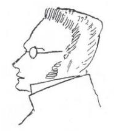

編者按：朝鮮也是彈丸之地，但不能因為朝鮮是彈丸之地就忽視朝修的危害性。如今中國香港開始推廣粵語學習了。

https://www.chp.gov.hk/files/pdf/local_situation_covid19_tc.pdf
關於香港，內地對其討論甚少，但是香港號稱發達的醫療水平在新冠病毒面前也淪為了地球笑話，而當局一方面發動百毒這一走狗對香港病毒的新聞大力打壓，另一方面則在電視機上宣傳香港欣欣向榮的騙局，這是笑話。而林鄭月娥等法西斯主義走狗統治時期，香港為什麼沒有關於病毒的預測呢？為什麼“資本主義”、“自由”香港沒有出現李文亮那樣的人物呢？可見香港的統治就是法西斯主義統治。
在最新的圖表中，我們可以看到香港的第二輪病毒大爆發正在醞釀，而宣傳部對這一切都完全忽視，包括我們的香港之友鍾翔宇也保持無知的態度，背後又做了什麼賣國求榮的黑箱交易、人口販賣和清洗，那就不得而知了。
而“砸爛王星尊的狗頭”和“王星尊”在這一期間大發災難財，香港法西斯主義當局利用了香港人民的絕望搞出了個什麼《地獄親歷記》，還受到王星尊等形而上學家的吹捧。對香港的合作醫療也保持無視，人民對香港病毒的沉默就是對香港人民的暴力。
中國國安局則利用人民對於洋基帝國主義的仇恨大肆對內地釋放香港貸款，放高利貸；而又自我偽造出所謂緊張的“海臺局勢”，用以轉移香港人民的矛盾，同時對內則大量釋放致幻劑。香港人民已經被欺騙太久太久了！
俄烏衝突是世界大戰的前哨沒錯，但是事物發展的根本原因，在於事物的內部而不在於事物的外部，在於事物本身內部的矛盾性，忽視這一點，這些人又和托洛茨基主義者有什麼區別呢？
中國為了維持洋基帝國主義的經濟泡沫，在俄烏衝突中大肆煽風點火，轉移人民視線，妄圖洗刷臭名！最後反映到香港就是一片泡沫。
在此期間與“砸爛王星尊的狗頭”相對立的，就是BiliBili和喜馬拉雅的社會主義政治經濟學研究團體。共產主義者則與這些法西斯主義者不同，而對“自我革命”的批判則沒有聯繫到波爾布特（組織的自我純化）的認識錯誤。當局無非是想把香港變成下一個柬埔寨。

而對“自我革命”的批判也沒有涉及到德國古典哲學的施蒂納的極端資產階級利己主義的批判。
麦克斯.施蒂纳（1806.10.25-1856.6.25），德国哲学家。小资产阶级无政府主义的创始人之一。原名J.C.施米特 Johann Kaspar Schmidt。
5．所有者 Ｃ．我的自我享乐
https://www.marxists.org/chinese/marx-engels/03/016.htm
5．在自己的虚构中享乐的“施蒂纳”
http://www.71.cn/2011/1011/636082.shtml
一直以来，波尔布特和红色高棉得到了中国共产党以及毛泽东本人的大力支持和援助，同时 … 红色高棉在组织内部强调自我纯化，不断寻找思想不纯的成员并对其进行肃清。
https://maozhuyi.home.blog/2020/09/01/居高临下的救世主：波尔布特政权的错误/
可以說“砸爛王星尊的狗頭”和“紅星不滅”是一夥人，從他們的社會關係上就能看得出來！從他們對香港病毒期間內地發起的社會主義政治經濟學朗讀運動的無視就能看得出來！這些想要一腳進入共產主義的人，和劉少奇、鄧小平之流所宣傳的高產稻田放衛星又有什麼區別呢？政治經濟學的缺乏，Matrix的宗派主義，以及其所謂組織的Matrix聊天室的破產，以及所謂審核處的“左版運動”，對托洛茨基主義者當成實幹家對待，而到如今的停更。
{kind=link}
{kind=link}
{kind=link}
{kind=link}
{kind=link}
{kind=link}